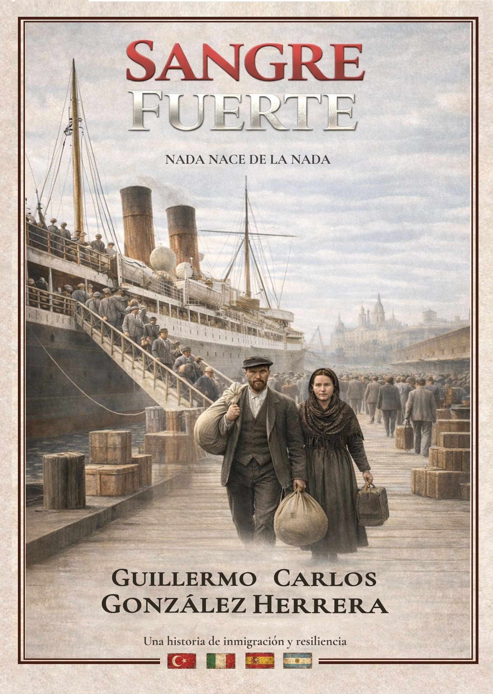
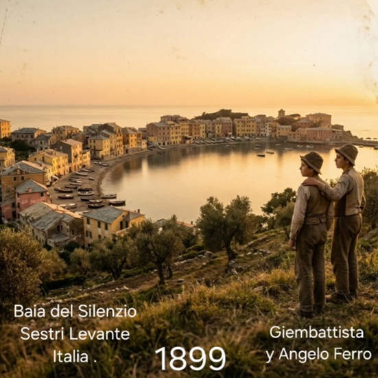
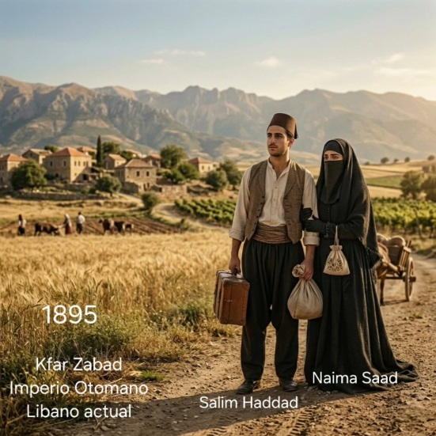
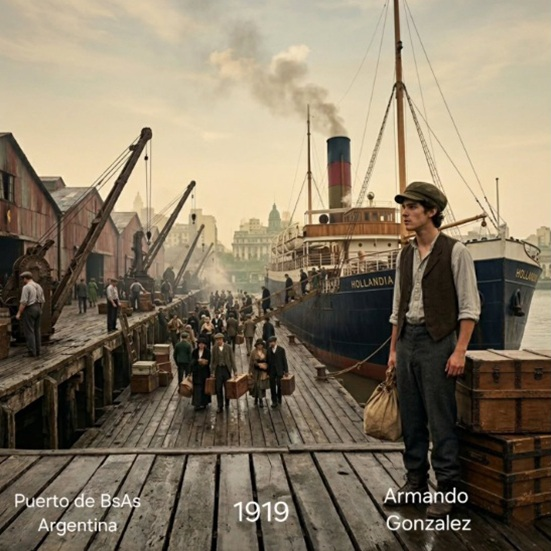
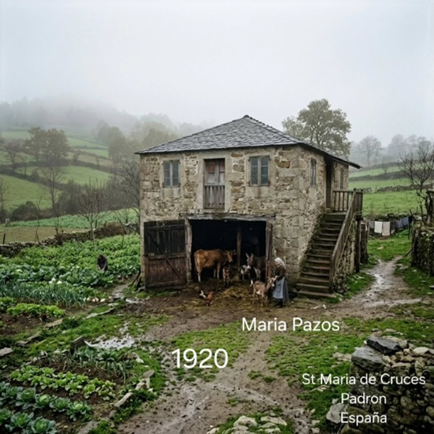
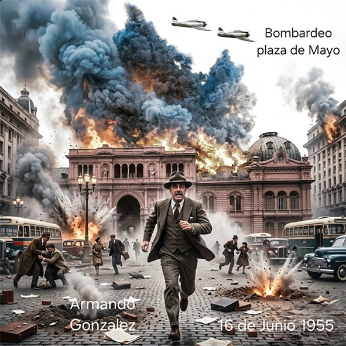
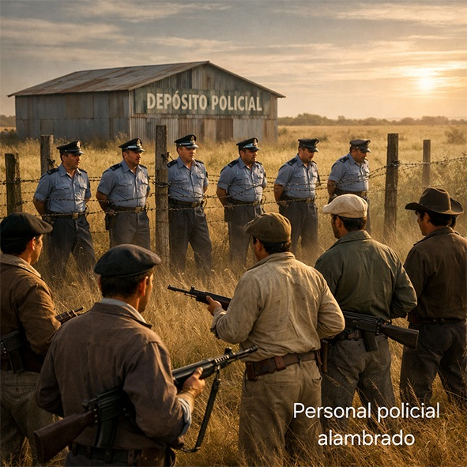

SANGRE
FUERTE

Sangre Fuerte es una novela basada en hechos reales que reconstruye, a lo largo de varias generaciones, la historia de tres familias de inmigrantes: españoles, italianos y árabes que llegaron a la Argentina entre fines del siglo XIX y comienzos del siglo XX en busca de una vida mejor.
La novela comienza en Europa, en pequeños pueblos donde la pobreza, la falta de oportunidades y la dureza de la vida obligan a tomar decisiones extremas, como separar familias y enviar a los hijos solos hacia América con la esperanza de que allí pudieran construir un futuro distinto.
A través de distintas generaciones, la novela muestra cómo el esfuerzo, el sacrificio, el trabajo y los vínculos familiares fueron construyendo lentamente una estructura que permitió a los descendientes vivir una realityad distinta a la de sus antepasados.
La novela culmina en 1975, cuando las generaciones nacidas en el país ya tienen su propio camino, pero continúan llevando dentro de sí la herencia invisible de quienes llegaron sin nada y construyeron todo desde cero.






Título:
Sangre Fuerte
Autor:
Guillermo Carlos González Herrera
Género:
Novela histórica
Subgénero:
Saga familiar – Inmigración – Historia argentina
Tipo de obra:
Novela histórica basada en hechos reales
Extensión:
270 páginas (formato A5)
Estructura:
14 capítulos / Incluye prólogo / Incluye archivo fotográfico
Ambientación geográfica:
España, Italia, Líbano y Argentina
Período histórico:
Desde fines del siglo XIX año 1875 hasta la década de 1975
Idioma:
Español
Estado de la obra:
Inédita - Publicada en Marzo 2026
Basada en hechos reales:
Sí
Público:
Adulto
Temas principales:
Inmigración, familia, trabajo, desarraigo, identidad, historia argentina, herencia generacional, construcción social argentina.
Continuación prevista:
Sí. Segunda parte en desarrollo que abarcará el período comprendido entre 1975 y 2025.
"Guillermo Gonzalez Herrera construye un relato solido que pone en primer plano la vida de las familias inmigrantes. Con una narracion firme y bien anclada en su contexto, la obra transmite con claridad el esfuerzo, el sacrificio y el sentido de pertenencia que atraviesan generaciones."
— Revista Linaje y Memoria
"Sangre Fuerte logra reconstruir con notable sensibilidad el recorrido de los inmigrantes italianos, españoles y arabes en la Argentina de comienzos del siglo XX. Una obra que transmite con claridad el peso del desarraigo y la construccion de identidad."
— Editorial Raiz Antigua